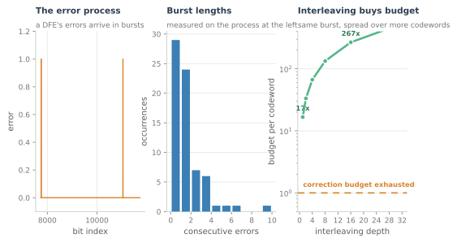
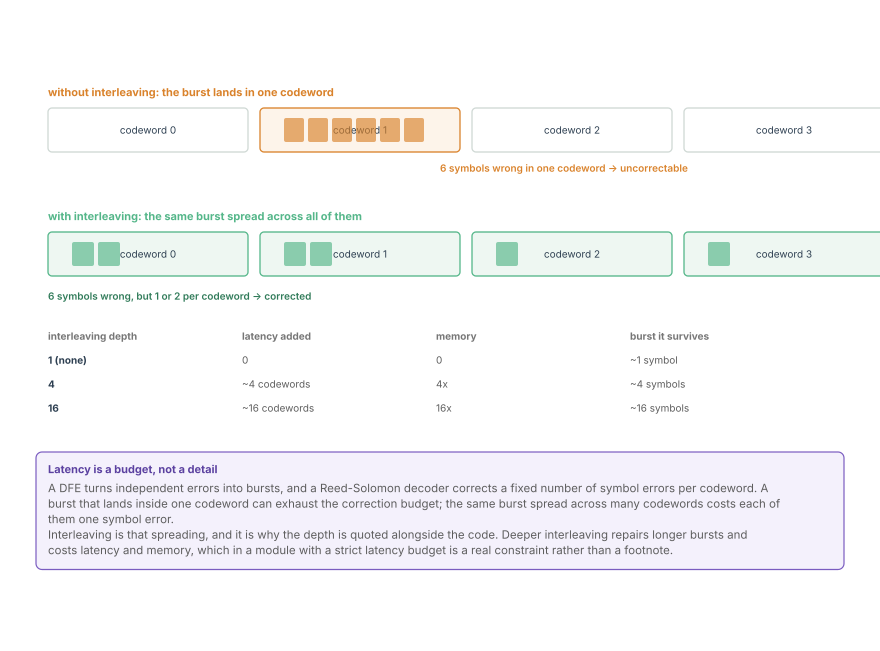
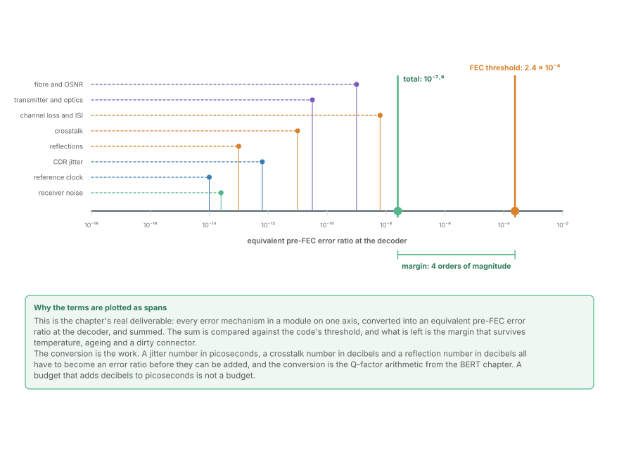
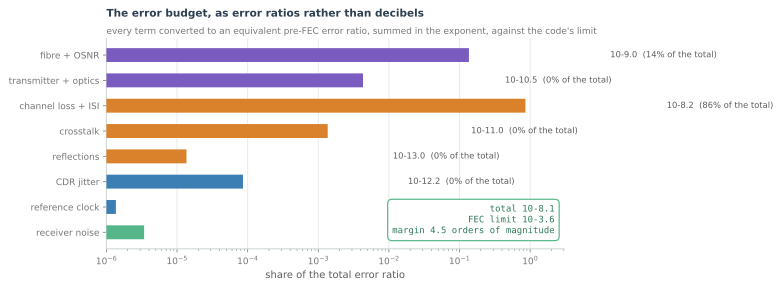
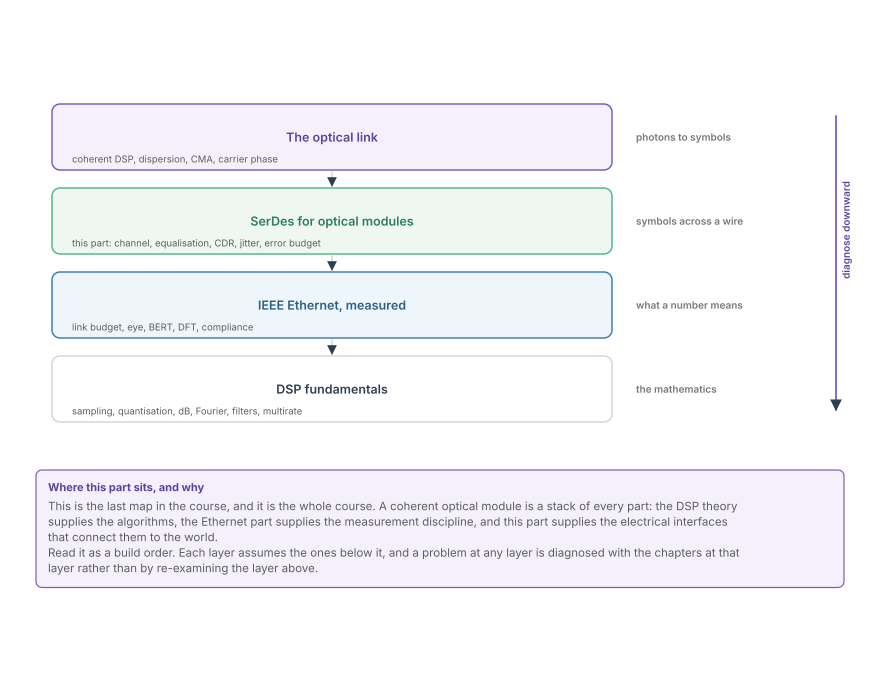

FEC, Burst Errors and the End-to-End Error Budget
How errors arrive at a SerDes end, why DFE error propagation makes them bursty, and how interleaving and code choice budget a module's whole link.
This is the chapter that decides whether the module ships. Five chapters have described impairments; this one adds them up and compares the total against what the forward error correction can repair. Everything before it is diagnosis; this is the verdict.
The reason it needs its own chapter is that the impairments do not add in the units they are measured in. Jitter is in picoseconds, crosstalk in decibels, reflections in decibels, OSNR in decibels per hertz. Before any of them can be summed they have to be converted into the same currency -- an error ratio at the decoder -- and that conversion is where the arithmetic is actually done.
What the SerDes hands the FEC
A SerDes lane does not produce independent errors. It produces bursts, and the reason is the DFE from two chapters ago.

The left panel is an error process with a feedback mechanism: each error raises the probability that the next decision is also wrong. The middle panel is the consequence -- most errors arrive singly, but a meaningful fraction arrive in runs of two, three and four.
That distribution is not a nuisance; it is a design input. A Reed-Solomon code corrects a fixed number of symbol errors per codeword, and a burst that lands inside one codeword can exhaust the correction budget while the same burst spread across many codewords costs each of them very little.

Interleaving is that spreading. The encoder writes consecutive symbols into different codewords in rotation, and the decoder reads them back the same way. The depth is the number of codewords in the rotation, and it is quoted alongside the code because neither number means anything alone:
- Depth 1 corrects essentially nothing beyond isolated errors.
- Depth 4 survives bursts of about four symbols.
- Depth 16 survives bursts of about sixteen, at sixteen times the memory and a latency proportional to the depth.
Latency is a real budget in a module. A gearbox or retimed module sits inside a round-trip protocol, and some applications -- memory fabrics, some fronthaul -- specify a maximum. That is why interleaving depth is chosen against a latency requirement rather than simply maximised.
The conversion
To add the terms up, each has to become an error ratio. The Q-factor arithmetic from the Ethernet part's BERT chapter is the converter, and it applies to each term in the same way:
- A jitter number in picoseconds becomes an amplitude penalty by multiplying by the signal's slew rate at the crossing, and then an error ratio through Q.
- A crosstalk number in decibels is an amplitude ratio, and it becomes an error ratio directly through Q.
- A reflection in decibels is the same, once you have decided whether it adds coherently or in power.
- An OSNR becomes a Q through the receiver's noise bandwidth and its symbol rate.
None of those conversions is exact, and that is acceptable. A budget is a model, and its value is that it puts every impairment in the same units so that they can be ranked and summed -- and so that a shortfall can be attributed to a cause.
The budget

The figure is the deliverable. Every mechanism is drawn as a span from a common axis, all of them converted into an equivalent pre-FEC error ratio at the decoder, and their sum is compared against the code's threshold.
The summation rule is worth stating because it is a common mistake:
Independent error mechanisms add as rates, which means their exponents add only approximately -- and the approximation fails when one term dominates, which is exactly when you most want to know. Two terms at 10⁻⁹ each give 2 × 10⁻⁹, not 10⁻⁸. The figure computes the sum on the arrays rather than adding the exponents.

The bar chart answers the question the waterfall raises: once the total is known, which term is responsible? In the representative budget shown, channel loss and ISI dominate, with the fibre and OSNR terms next. That ranking is the whole point -- it tells you whether the next decibel should come from a better board, a better laser, or a better equaliser.
Margin, and what it is for
The distance between the total and the FEC threshold is the link's margin, and its size is a policy decision rather than a technical one.
- A link with 4 orders of magnitude of margin in pre-FEC error ratio sits about 2 to 3 dB away from its coding threshold under nominal conditions. That covers temperature, supply variation, ageing and a dirty connector.
- A link with 1 order of magnitude passes in the lab and fails on the third day in a rack. It is compliant and unshippable.
- A link that passes post-FEC with no pre-FEC margin has told you nothing about how close it is to failing, which is why every real qualification tracks the pre-FEC number.
The asymmetry that matters: post-FEC error ratio is a pass/fail flag; pre-FEC error ratio is the gauge. A link reporting zero post-FEC errors can be at 10⁻⁶ pre-FEC with enormous margin, or at 2 × 10⁻⁴ pre-FEC and one thermal event from the cliff. Both look identical on a post-FEC counter.
The whole part, stacked

The last figure is the course itself. The DSP fundamentals supply the algorithms; the Ethernet part supplies the measurement discipline; this part supplies the electrical interfaces; and the optical part is where all of it is finally deployed, at 100+ GBd, over fibre.
Read it as a build order and as a diagnostic. Each layer assumes the ones beneath it, and a problem at any layer is diagnosed with the chapters at that layer rather than by re-examining the layer above. An eye that will not open is not an FEC problem. A post-FEC error floor with a healthy eye is not an equaliser problem.
Where this connects
- A DFE turns independent errors into bursts, and interleaving is the mechanism that makes those bursts repairable.
- Interleaving depth and code strength are one specification, and both are traded against latency.
- Every impairment must be converted to an error ratio before it can be summed, and the converter is the Q-factor arithmetic.
- Independent mechanisms add as rates, not as exponents, and the sum is compared against the FEC's threshold.
- Margin is the deliverable, pre-FEC is the gauge, and post-FEC is only a flag.
In the optical link
This is exactly how a coherent link is signed off. An optical budget converts OSNR, dispersion penalty, nonlinear penalty, crosstalk and implementation margin into an equivalent pre-FEC error ratio, sums them, and compares the total against the code's threshold. The codes are stronger and the impairments have different names, but the method -- convert, sum, compare, keep margin -- is identical.
The burst argument is even stronger in optics. Nonlinearity and residual dispersion produce correlated errors, and a coherent link's interleaving depth is chosen with that correlation in mind. Fibre nonlinearity and digital backpropagation, later in the optical part, are where that correlation originates, and they are the reason the optical FEC discussion is about correlation as much as about code strength.
And the margin policy is what makes an optical network operable. A 400ZR link commissioned with 3 dB of OSNR margin survives a splice, an ageing laser and a hot afternoon in a cabinet; one commissioned at its threshold does not. The arithmetic in this chapter is what turns that operational judgement into a number that can be written into a specification, measured at turn-up, and monitored for the life of the link.
That is the point of the whole course. The mathematics from the first parts, the measurement discipline from the Ethernet part, the interfaces from this part and the algorithms from the optical part are all in service of one question: given everything that can go wrong, is there enough margin left to be reliable for twenty years? Every chapter in this course is a term in that sum.